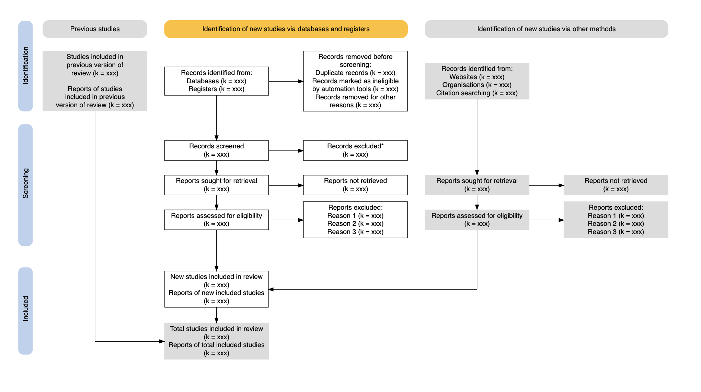
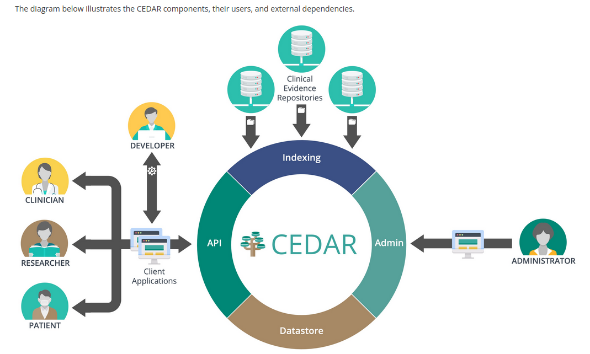

<!DOCTYPE html>
<html lang="en">
  <head>
    <meta charset="utf-8" />
    <meta name="viewport" content="width=device-width, initial-scale=1.0, maximum-scale=1.0, user-scalable=no" />

    <title></title>
    <link rel="stylesheet" href="dist/reveal.css" />
    <link rel="stylesheet" href="dist/theme/black.css" id="theme" />
    <link rel="stylesheet" href="plugin/highlight/zenburn.css" />
	<link rel="stylesheet" href="css/layout.css" />
	<link rel="stylesheet" href="plugin/customcontrols/style.css">
	<link rel="stylesheet" href="plugin/chalkboard/style.css">

	<link rel="stylesheet" href="plugin/reveal-pointer/pointer.css" />


    <script defer src="dist/fontawesome/all.min.js"></script>

	<script type="text/javascript">
		var forgetPop = true;
		function onPopState(event) {
			if(forgetPop){
				forgetPop = false;
			} else {
				parent.postMessage(event.target.location.href, "app://obsidian.md");
			}
        }
		window.onpopstate = onPopState;
		window.onmessage = event => {
			if(event.data == "reload"){
				window.document.location.reload();
			}
			forgetPop = true;
		}

		function fitElements(){
			const itemsToFit = document.getElementsByClassName('fitText');
			for (const item in itemsToFit) {
				if (Object.hasOwnProperty.call(itemsToFit, item)) {
					var element = itemsToFit[item];
					fitElement(element,1, 1000);
					element.classList.remove('fitText');
				}
			}
		}

		function fitElement(element, start, end){

			let size = (end + start) / 2;
			element.style.fontSize = `${size}px`;

			if(Math.abs(start - end) < 1){
				while(element.scrollHeight > element.offsetHeight){
					size--;
					element.style.fontSize = `${size}px`;
				}
				return;
			}

			if(element.scrollHeight > element.offsetHeight){
				fitElement(element, start, size);
			} else {
				fitElement(element, size, end);
			}		
		}


		document.onreadystatechange = () => {
			fitElements();
			if (document.readyState === 'complete') {
				if (window.location.href.indexOf("?export") != -1){
					parent.postMessage(event.target.location.href, "app://obsidian.md");
				}
				if (window.location.href.indexOf("print-pdf") != -1){
					let stateCheck = setInterval(() => {
						clearInterval(stateCheck);
						window.print();
					}, 250);
				}
			}
	};


        </script>
  </head>
  <body>
    <div class="reveal">
      <div class="slides"><section ><section data-markdown><script type="text/template"><!-- .slide: class="drop" data-background-image="https://i.imgur.com/9EHnpzv.png" -->
<div class="" style="position: absolute; left: 0px; top: 0px; height: 1080px; width: 1920px; min-height: 1080px; display: flex; flex-direction: column; align-items: center; justify-content: center" absolute="true">

<div class="has-light-background" style="background-color: #FFFFFF; padding: 250px 0 250px 600px; box-sizing: border-box; position: absolute; left: 20%; top: 20%; height: 80%; width: 80%; display: flex; flex-direction: column; align-items: flex-start; justify-content: space-evenly" align="left">

# SRDRPlus tempered by FHIR
#### Introductions and acknowledgements
</div>
</div>

<aside class="notes"><p>Good morning,</p>
<p>my name is Jens Jap and I&#39;m the lead developer of the SRDRPlus platform.</p>
<p>To begin I would like to thank everyone present for their time and for the chance to share with you our latest developments. Specifically I would like to present to you the introduction of the FHIR standard into the SRDRPlus platform.</p>
<p>But before we begin a few acknowledgements.</p>
</aside></script></section><section data-markdown><script type="text/template"><!-- .slide: class="drop" -->
<div class="" style="position: absolute; left: 0px; top: 0px; height: 1080px; width: 1920px; min-height: 1080px; display: flex; flex-direction: column; align-items: center; justify-content: center" absolute="true">

# Evidence-based Practice Center Division


## Lionel Bañez, M.D.
</div>

<aside class="notes"><p>Firstly, I would like to thank Dr. Bañez for his support and for giving us the opportunity to speak with you all today. Dr. Bañez has guided the SRDR project since its inception and it goes without saying that the platform would not exist without him.</p>
</aside></script></section><section data-markdown><script type="text/template"><!-- .slide: class="drop" -->
<div class="" style="position: absolute; left: 0px; top: 0px; height: 1080px; width: 1920px; min-height: 1080px; display: flex; flex-direction: column; align-items: center; justify-content: center" absolute="true">


## Joseph Lau, MD
</div>

<aside class="notes"><p>Next I would like to acknowledge Dr. Lau, who conceived of the concept of a shared Systematic Review Data Repository as early as the 1980&#39;s and continues to serve in an advisory capacity whenever I can wrangle him away from his camera and his stargazing.</p>
</aside></script></section><section data-markdown><script type="text/template"><!-- .slide: class="drop" -->
<div class="" style="position: absolute; left: 0px; top: 0px; height: 1080px; width: 1920px; min-height: 1080px; display: flex; flex-direction: column; align-items: center; justify-content: center" absolute="true">

# Brown University
<split even>
<div>


## Ian Saldanha, MBBS, MPH, PhD
</div>

<div>


## Ethan Balk, MD, MPH
</div>

<div>


## Bryant Smith, MPH, CPH
</div>

<div>


## Gaelen Adam, MPH, PhD
</div>
</split>
</div>

<aside class="notes"><p>And finally I&#39;d like to thank the rest of the SRDR Team at the Brown University EPC for their tireless effort as well as their dedication to the SRDR vision.</p>
</aside></script></section></section><section  data-markdown><script type="text/template"><!-- .slide: class="drop" data-background-image="https://i.imgur.com/9EHnpzv.png" -->
<div class="" style="position: absolute; left: 0px; top: 0px; height: 1080px; width: 1920px; min-height: 1080px; display: flex; flex-direction: column; align-items: center; justify-content: center" absolute="true">

# FHIR Standard


#### The What, Why, and Where
</div>

<aside class="notes"><p>The three main topics I will cover today are a review of the FHIR standard, <strong>What</strong> it is and what it is not. <strong>Why</strong> we need it and consequently <strong>Where</strong> we go now that we have it. I will then demonstrate this by sending data from SRDRPlus to the FEvIR platform using FHIR.</p>
</aside></script></section><section ><section data-markdown><script type="text/template"><!-- .slide: class="drop" data-background-image="https://i.imgur.com/9EHnpzv.png" -->
<div class="" style="position: absolute; left: 0px; top: 0px; height: 1080px; width: 1920px; min-height: 1080px; display: flex; flex-direction: column; align-items: center; justify-content: center" absolute="true">

# What it is (not)
#### A short history lesson...(only a minute I promise)
</div>

<aside class="notes"><p><strong>What</strong>: FHIR is a standard for exchanging healthcare information electronically. Development began in 2011 and the first draft specification was published in 2012. Since then, FHIR has been continuously developed and refined through community collaboration and real-world implementations. EBMonFHIR (which stands for Evidence-Based Medicine on FHIR) is an initiative aimed at improving the integration and accessibility of evidence-based medicine (EBM) data within the FHIR framework. This initiative focuses on standardizing how evidence and research data are represented and shared in healthcare systems, enabling better decision-making based on the latest research and evidence.</p>
</aside></script></section><section data-markdown><script type="text/template"><!-- .slide: class="drop" data-background-image="https://i.imgur.com/9EHnpzv.png" -->
<div class="" style="position: absolute; left: 0px; top: 0px; height: 1080px; width: 1920px; min-height: 1080px; display: flex; flex-direction: column; align-items: center; justify-content: center" absolute="true">

<split even>
<div>


  #### ~~Data Store~~
</div>
<div style="margin: 100px 50px;">


  #### FHIR
</div>
<div>


  #### ~~Data  Store~~
</div>
</split>
</div>

<aside class="notes"><p>Therefore, don&#39;t think of FHIR as a way to store data but rather as a standard for the exchange of said data, akin to a train system transporting passengers between stations. Each resource type can be thought of as one of the train cars, with the FHIR standard dictating what can go into each car and the specific rules for the composition and organization of the train as a whole.</p>
</aside></script></section></section><section ><section data-markdown><script type="text/template"><!-- .slide: class="drop" data-background-image="https://i.imgur.com/9EHnpzv.png" -->
<div class="" style="position: absolute; left: 0px; top: 0px; height: 1080px; width: 1920px; min-height: 1080px; display: flex; flex-direction: column; align-items: center; justify-content: center" absolute="true">

# Why you need it
</div>

<aside class="notes"><p><strong>Why</strong>: So why do we need it?</p>
<p>Just like communication between humans require syntax and vocabulary, so do computer systems also need to agree on rules such as structure and data definitions before they can effectively communicate and understand each other.</p>
</aside></script></section><section data-markdown><script type="text/template"><!-- .slide: class="drop" data-background-image="https://i.imgur.com/9EHnpzv.png" -->
<div class="" style="position: absolute; left: 0px; top: 0px; height: 1080px; width: 1920px; min-height: 1080px; display: flex; flex-direction: column; align-items: center; justify-content: center" absolute="true">

# Before and after FHIR
<split even>

<div style="margin-right: 50px;">


</div>
<div>


  Image by <a href=" https://www.vectorportal.com" >Vectorportal.com</a>,  <a class="external text" href="https://creativecommons.org/licenses/by/4.0/" >CC BY</a>
</div>
</split>
</div>

<aside class="notes"><p>FHIR provides this framework and once two systems learn to use it they can both exchange information.</p>
<p>But this does beg the question. Systems today already do communicate, some already do exchange data. We have exporters, we have importers, we have data standards. If I want to send my data to EPPI Reviewer today I could just write an exporter that is compatible with EPPI Reviewer. Right? Sure, we can do that. But what if I want to send my data to Magic App? We&#39;d write another exporter! And Cochrane? More exporters. But that is not the only problem. What if those platforms change their data definitions? What if their data definitions are proprietary. What if <strong>our</strong> platform changes its data definitions? We then have to update and maintain every exporter we have ever developed to make sure they are still up-to-date and functional. This is costly and this is difficult.</p>
</aside></script></section><section data-markdown><script type="text/template"><!-- .slide: class="drop" -->
<div class="" style="position: absolute; left: 0px; top: 0px; height: 1080px; width: 1920px; min-height: 1080px; display: flex; flex-direction: column; align-items: center; justify-content: center" absolute="true">

# FHIR solves this as well

</div>

<aside class="notes"><p>FHIR can solve this for us as well, by assuming the role of the universal standard. The one standard to rule all platforms&#39; (data exchange).</p>
</aside></script></section><section data-markdown><script type="text/template"><!-- .slide: class="drop" -->
<div class="" style="position: absolute; left: 0px; top: 0px; height: 1080px; width: 1920px; min-height: 1080px; display: flex; flex-direction: column; align-items: center; justify-content: center" absolute="true">

# Beware here be dragons..


[https://xkcd.com/927/](https://xkcd.com/927)
</div>

<aside class="notes"><p>But as always...user beware...</p>
</aside></script></section></section><section ><section data-markdown><script type="text/template"><!-- .slide: class="drop" data-background-image="https://i.imgur.com/9EHnpzv.png" -->
<div class="" style="position: absolute; left: 0px; top: 0px; height: 1080px; width: 1920px; min-height: 1080px; display: flex; flex-direction: column; align-items: center; justify-content: center" absolute="true">

# Where do we go from here
## Vision for Future Application
</div>

<aside class="notes"><p><strong>Where</strong>: So where do we go from here? Where can we go and what can we do? With the foundations of a common standard in place we are free to send our data to anyone that can understand and we do not need to worry about maintaining dozens of versions, dozens of exporters for dozens of different platforms or applications.</p>
</aside></script></section><section data-markdown><script type="text/template"><!-- .slide: class="drop" data-background-image="https://i.imgur.com/9EHnpzv.png" -->
<div class="" style="position: absolute; left: 0px; top: 0px; height: 1080px; width: 1920px; min-height: 1080px; display: flex; flex-direction: column; align-items: center; justify-content: center" absolute="true">

# EPPI Reviewer Integration
<iframe src="Assets/EPPI-Mapper-StudyDesign.html" style="width: 1600px; height: 800px;"></iframe>
</div>

<aside class="notes"><p>You could send your extracted data from SRDRPlus to EPPI Reviewer and visualize your data using the EPPI Mapper tool.</p>
</aside></script></section><section data-markdown><script type="text/template"><!-- .slide: class="drop" data-background-image="https://i.imgur.com/9EHnpzv.png" -->
<div class="" style="position: absolute; left: 0px; top: 0px; height: 1080px; width: 1920px; min-height: 1080px; display: flex; flex-direction: column; align-items: center; justify-content: center" absolute="true">

# PRISMA Flow Diagram Integration


https://www.prisma-statement.org/prisma-2020-flow-diagram
</div>

<aside class="notes"><p>You could send your screening results to applications of your choosing, ones that support features and preferences you want such as PRISMA flow diagram generators and so are no longer bound by limitations of any one application.</p>
</aside></script></section><section data-markdown><script type="text/template"><!-- .slide: class="drop" data-background-image="https://i.imgur.com/9EHnpzv.png" -->
<div class="" style="position: absolute; left: 0px; top: 0px; height: 1080px; width: 1920px; min-height: 1080px; display: flex; flex-direction: column; align-items: center; justify-content: center" absolute="true">

# Integration with external search engines

</div>

<aside class="notes"><p>Powerful search engines and business analytics tools can fetch your data from SRDRPlus in regular intervals or in real-time and run their business intelligence, indexing or any other analytics tools to inform clinicians, researchers and patients and help them find and analyze raw data in real-time.</p>
<p>As you can imagine, a lot of things are possible and they all build on top of the ability to communicate between systems using FHIR as the interoperability standard.</p>
</aside></script></section></section><section  data-markdown><script type="text/template"><!-- .slide: class="drop" -->
<div class="" style="position: absolute; left: 0px; top: 0px; height: 1080px; width: 1920px; min-height: 1080px; display: flex; flex-direction: column; align-items: center; justify-content: center" absolute="true">

# Demo
#### [SRDRPlus Website](https://srdrplus.ahrq.gov/)

</div>

<aside class="notes"><p>Next We&#39;ll walk you through the steps required to send your project data on SRDRPlus to an external platform, such as FEvIR.</p>
</aside></script></section><section  data-markdown><script type="text/template"><!-- .slide: class="drop" -->
<div class="" style="position: absolute; left: 0px; top: 0px; height: 1080px; width: 1920px; min-height: 1080px; display: flex; flex-direction: column; align-items: center; justify-content: center" absolute="true">


## Brian S. Alper, MD, MSPH, FAAFP, FAMIA
</div>

<aside class="notes"><p>At this point I would like to introduce Dr. Brian Alper. Dr. Alper previously created and scaled DynaMed, an evidence-based point-of-care clinical reference used globally, and supported many developments related to systematic reviews, guidelines, and clinical decision support. Dr. Alper’s current activities are focused on defining and scaling an interoperability standard for evidence and evidence-based guidance. He leads the EBMonFHIR project to extend FHIR from health data exchange to evidence data exchange and was a key consultant in helping the SRDRPlus conversion to FHIR export.</p>
</aside></script></section><section  data-markdown><script type="text/template"><!-- .slide: class="drop" data-background-image="https://i.imgur.com/9EHnpzv.png" -->
<div class="" style="position: absolute; left: 0px; top: 0px; height: 1080px; width: 1920px; min-height: 1080px; display: flex; flex-direction: column; align-items: center; justify-content: center" absolute="true">

# Questions?
#### FHIR away!
</div></script></section></div>
    </div>

    <script src="dist/reveal.js"></script>

    <script src="plugin/markdown/markdown.js"></script>
    <script src="plugin/highlight/highlight.js"></script>
    <script src="plugin/zoom/zoom.js"></script>
    <script src="plugin/notes/notes.js"></script>
    <script src="plugin/math/math.js"></script>
	<script src="plugin/mermaid/mermaid.js"></script>
	<script src="plugin/chart/chart.min.js"></script>
	<script src="plugin/chart/plugin.js"></script>
	<script src="plugin/menu/menu.js"></script>
	<script src="plugin/customcontrols/plugin.js"></script>
	<script src="plugin/chalkboard/plugin.js"></script>
	<script src="plugin/reveal-pointer/pointer.js"></script>

    <script>
      function extend() {
        var target = {};
        for (var i = 0; i < arguments.length; i++) {
          var source = arguments[i];
          for (var key in source) {
            if (source.hasOwnProperty(key)) {
              target[key] = source[key];
            }
          }
        }
        return target;
      }

	  function isLight(color) {
		let hex = color.replace('#', '');

		// convert #fff => #ffffff
		if(hex.length == 3){
			hex = `${hex[0]}${hex[0]}${hex[1]}${hex[1]}${hex[2]}${hex[2]}`;
		}

		const c_r = parseInt(hex.substr(0, 2), 16);
		const c_g = parseInt(hex.substr(2, 2), 16);
		const c_b = parseInt(hex.substr(4, 2), 16);
		const brightness = ((c_r * 299) + (c_g * 587) + (c_b * 114)) / 1000;
		return brightness > 155;
	}

	var bgColor = getComputedStyle(document.documentElement).getPropertyValue('--r-background-color').trim();
	var isLight = isLight(bgColor);

	if(isLight){
		document.body.classList.add('has-light-background');
	} else {
		document.body.classList.add('has-dark-background');
	}

      // default options to init reveal.js
      var defaultOptions = {
        controls: true,
        progress: true,
        history: true,
        center: true,
        transition: 'default', // none/fade/slide/convex/concave/zoom
        plugins: [
          RevealMarkdown,
          RevealHighlight,
          RevealZoom,
          RevealNotes,
          RevealMath.MathJax3,
		  RevealMermaid,
		  RevealChart,
		  RevealCustomControls,
		  RevealMenu,
	      RevealPointer,
		  RevealChalkboard, 
        ],


    	allottedTime: 120 * 1000,

		mathjax3: {
			mathjax: 'plugin/math/mathjax/tex-mml-chtml.js',
		},
		markdown: {
		  gfm: true,
		  mangle: true,
		  pedantic: false,
		  smartLists: false,
		  smartypants: false,
		},

		mermaid: {
			theme: isLight ? 'default' : 'dark',
		},

		customcontrols: {
			controls: [
				{ icon: '<i class="fa fa-pen-square"></i>',
				title: 'Toggle chalkboard (B)',
				action: 'RevealChalkboard.toggleChalkboard();'
				},
				{ icon: '<i class="fa fa-pen"></i>',
				title: 'Toggle notes canvas (C)',
				action: 'RevealChalkboard.toggleNotesCanvas();'
				},
			]
		},
		menu: {
			loadIcons: false
		}
      };

      // options from URL query string
      var queryOptions = Reveal().getQueryHash() || {};

      var options = extend(defaultOptions, {"width":1920,"height":1080,"margin":0,"controls":true,"progress":true,"slideNumber":true,"transition":"convex","transitionSpeed":"default"}, queryOptions);
    </script>

    <script>
      Reveal.initialize(options);
    </script>
  </body>

  <!-- created with Advanced Slides -->
</html>
